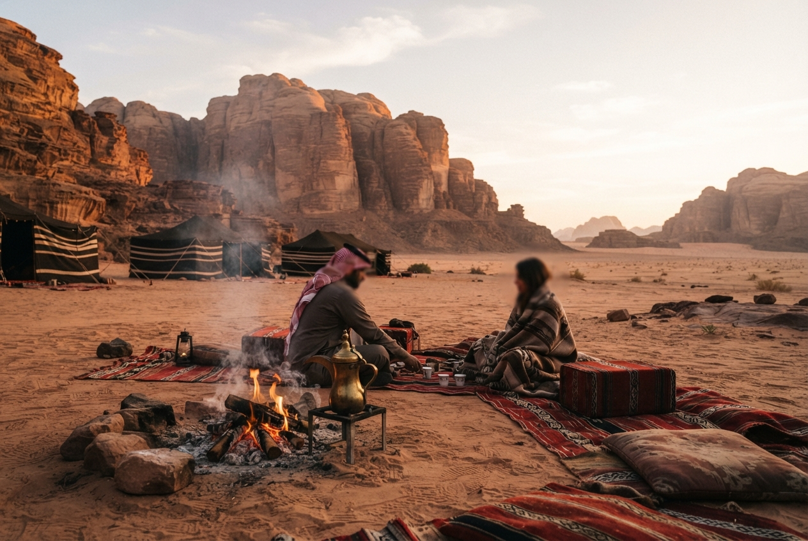
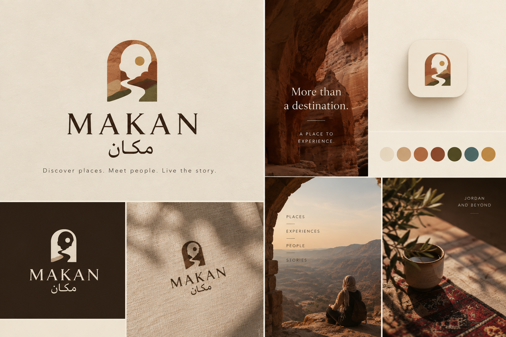
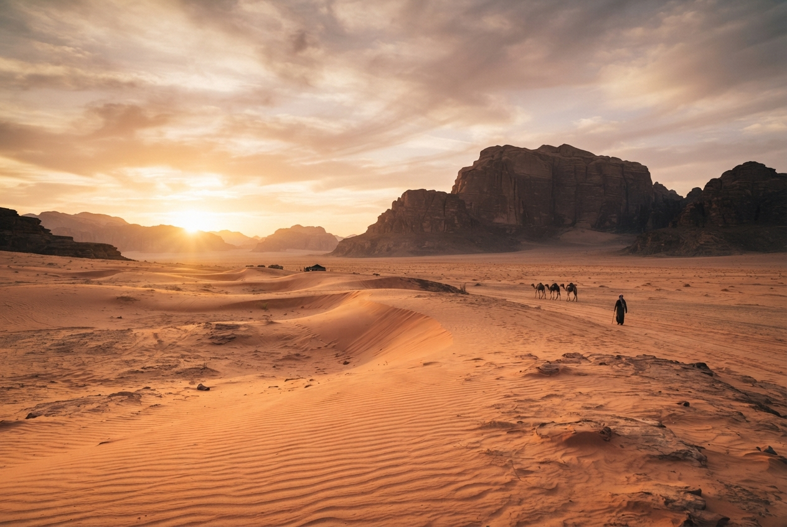
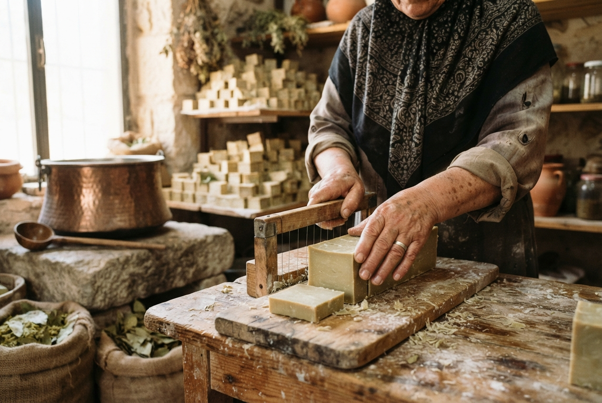
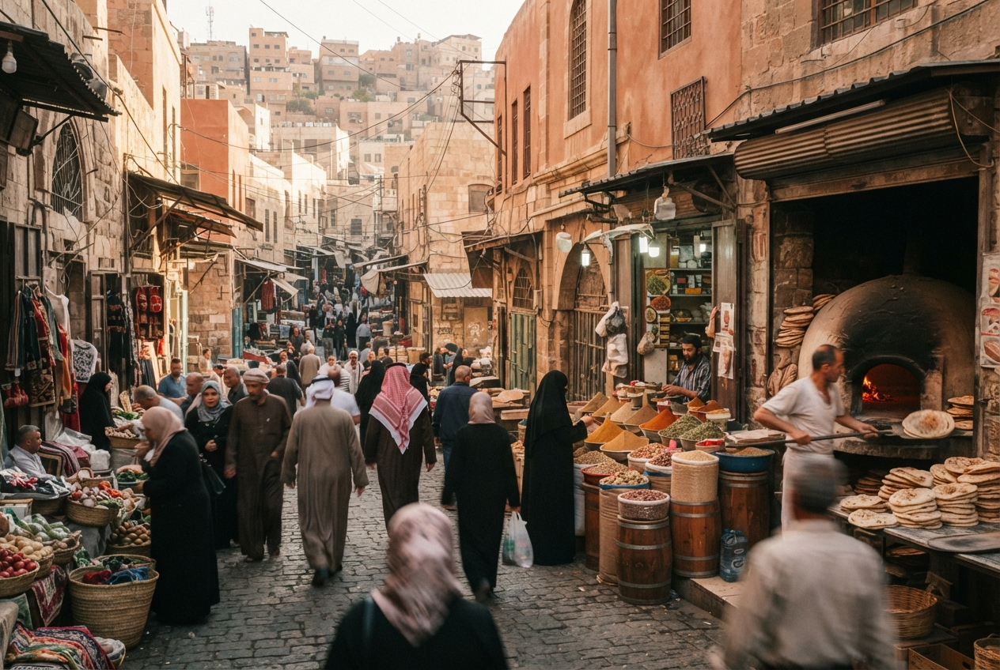

Dawn in Wadi Rum
Ride out with Bedouin hosts before first light — coffee over the coals as the sun breaks the dunes, then breakfast where the desert feels endless.
View experience

Don't start with where to go. Start with what you want to experience.
Makan brings you the places, the people, and the hands that make Jordan meaningful — then walks you right into them.
Nature, culture, food, craft — pick a mood and Makan finds the places and the people to match.
Hand-picked experiences led by local hosts — a desert dawn, a workshop at the kiln, a walk through the old city's quiet kitchens.

Ride out with Bedouin hosts before first light — coffee over the coals as the sun breaks the dunes, then breakfast where the desert feels endless.
View experience
Pull up a chair in Um Khaled's workshop and learn the family recipe for olive-oil soap — from the copper pot to the drying rack, hands-on.
View experience
Follow a host behind the street-facing windows of the old city — a market, a bakery, a bowl of knafeh still warm from the oven.
View experienceSee the place before you experience it.
Immerse yourself through aerial perspectives and discover key landmarks before setting foot there.
Ma'an Governorate, Jordan
The individuals, storytellers, and artisans making every destination meaningful.

Desert Guide & Stargazer
Location: Wadi Rum, Jordan
Languages: Arabic, English
Rating: ★ 4.9 (42 reviews)
Born and raised in the protected area, Ahmad shares navigational knowledge passed down through generations.
View Ahmad's ProfileEditorial narratives highlighting crafts, oral history, and living heritage.
Published by Makan Editorial • 6 min read
An in-depth look inside the family-owned workshops of Ajloun, detailing the sustainable cycles of seasonal pruning and artisanal preservation.
Read Full StoryJoin as an explorer to uncover authentic traditions, or register as a local host to share your craft and culture with the world.